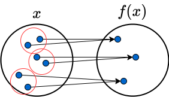
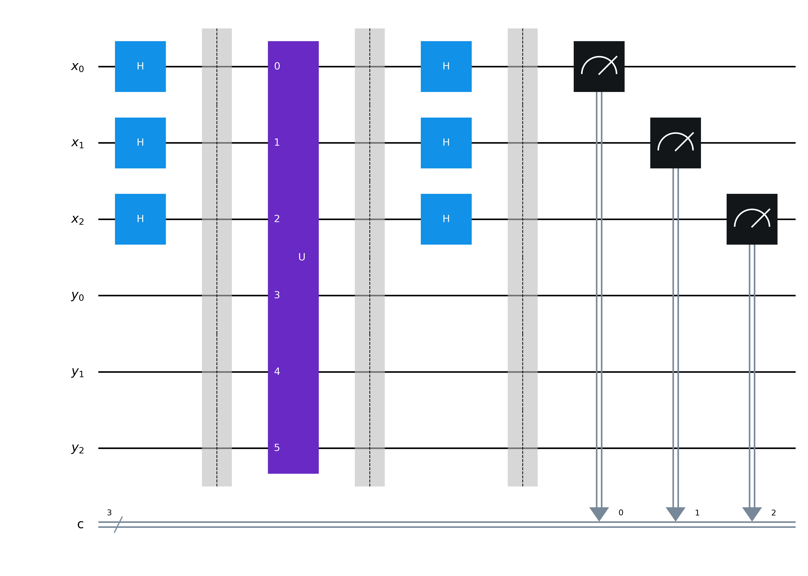

Lecture 7: Early Quantum Algorithms II#
Warning
These lecture notes are a work in progress and are not a replacement for watching the lecture video, it’s intended to be a supplementary reading after watching the lecture.
Focus of Lecture#
After this lecture you should be able to:
Understand Simon’s Algorithm.
Understand the idea behind common public key crytography schemes.
Understand at a high level Shor’s Algorithm.
Simon’s Algorithm#
Simon’s algorithm was the first proposed quantum algorithm to demonstrate an exponential speed up over classical computers. While it doesn’t have a known practical use, it served as an inspiration for many other quantum algorithms.
Simon’s Problem#
Let \(f:\{0, 1\}^n \rightarrow \{0,1\}^n\) be a function with the following properties:
It is 2-1 (for every \(x\) there is a \(y\) such that \(f(x)=f(y)\))
If \(f(x)=f(y)\) then \(x=y \oplus c\) and \(y=x\oplus c\). Our task is to find \(c\).

Fig. 59 A 2-1 function, here for every output there are two inputs that map to it.#
Here \(x \oplus c\) means to take the component-wise XOR between the n-bit strings \(x\) and \(c\). If \(x=1011\) and \(c=0101\) then we would get \(x\oplus c=1110\).
Classically this can be solved with an average of \(O(2^{n/2})\) evaluations. While on a quantum computer on average we will require only \(O(n)\) evaluations.
Simon’s Circuit#
With \(2n\) qubits split into 2 n-bit registers, Simon’s algorithm consists in the following steps:
Firstly we apply a Hadamard gate to each qubit in the first register, creating the state
Note that the sum is over all n-bit strings, so for \(n=2\) we sum over \(00\), \(01\), \(10\) and \(11\).
Then we apply the unitary \(U|x\rangle|y\rangle=|x\rangle|y \oplus f(x) \rangle\) getting the state
Next we measure the qubits in the second register. Suppose we measured \(f(z)\), where recall \(f(z)\) is an n-bit string, then we know that qubits in the first register must either be in \(z\) or \(z \oplus c\) and hence the qubits in the first register are in state
Now we apply a Hadamard gate again to each qubit in the first register producing the state
where \(x\cdot z=x_1 z_1 + x_2 z_2 + ... + x_n z_n\). Using the fact that \((-1)^{a \oplus b}=(-1)^{a+b}\) where \(a,b\in\{0,1\}\) we can rewrite this as
When \(x\cdot c\) is an odd number \(1 + (-1)^{x\cdot c}\) will be zero, thus we can simplify this as
where \(x\cdot c \in\, \text{even}\) means we only sum over bit strings for which \(x\cdot c\) is an even number.
Thus running the above circuit once, the first register gives us a value of \(x\) for which \(x\cdot c\) is even. If we repeat this \(n\) times we will end up with \(n\) independent equations (assuming we don’t get duplicate values of \(x\)) for which we can easily solve for \(c\).
Note that any measurements performed midway through a circuit may be moved to the end. As we don’t need to record the measurements of the second register, we don’t in practice need to perform these measurements.

Fig. 60 The circuit for Simon’s algorithm for \(n=3\).#
Simon’s Algorithm Conclusions#
As Simon’s algorithm requires running the circuit approximately \(n\) times it is \(O(n)\).
To solve classically we will generally require \(O(2^{n/2})\) evaluations.
Thus Simon’s algorithm gives an exponential speed-up.
However Simon’s problem is a toy problem with no known applications.
It did serve as an important inspiration for subsequent algorithms including Shor’s.
Shor’s Algorithm#
The fundamental theorem of arithmetic states that every integer can be unique written as a product of primes. For example the number \(42\) can be written as \(2*3*7\), all of which are prime. Shor’s algorithm can find the prime factors of a given integer exponentially faster than the best known classical algorithms.
Overview of Shor’s Algorithm#
Shor’s algorithm consists of two steps:
Reduce the factoring problem to an order finding problem
Efficiently solve the order finding problem using the QPE algorihm
The order finding problem is to find a value of \(r\) such that
where \(0<x<N\). Here \(\text{mod}\, N\) means we divide by \(N\) and keep the remainder. It turns out that if we have a fast method for order finding, then we also have a fast method for factoring numbers.
Order finding can be efficiently run on a quantum computer using the QPE algorithm with unitary
Implications for crytography#
In public-key cryptography one party is able to to securely share information to another, by using a public key (available to anyone) to encrypt a message and a private key (kept private by the party receiving the message) to decryt the message.
A common way to generate the public and private keys is to use the RSA algorithm. Here the protocal is as follows:
Choose two random prime numbers \(p\) and \(q\)
Compute \(n=pq\)
Compute \(\phi=(p-1)(q-1)\)
Select a random number \(e\) whose greatest common factor with \(\phi\) is 1
Find \(d\) where \(de=1\,\text{mod}\,\phi\)
The public keys are \((e, n)\) and the private key is \(d\). A message \(m\) can be encrypted using
and decrypted using
The security of RSA relies on the assumption that factoring is difficult and can’t be done efficiently, as far as we know this is true on classical computers, but Shor’s algorithm shows it’s not the case for quantum computers. Currently quantum computers are not large enough to run Shor’s algorithm, but post quantum cryptography protocals are already being adopted.
Shor’s Algorithm Conclusions#
Shor’s Algorithm can factor integers exponentially faster than the best known classical algorithms.
Using Shor’s algorithm one could break many popular encryption schemes including RSA and Diffie–Hellman.
Currently 10,000 qubits are required to break standard encryption schemes although this number will probably continue to fall in the future.
This motivates moving to post quantum cryptographic algorithms which are designed to remain secure against future quantum computers.